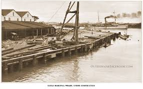
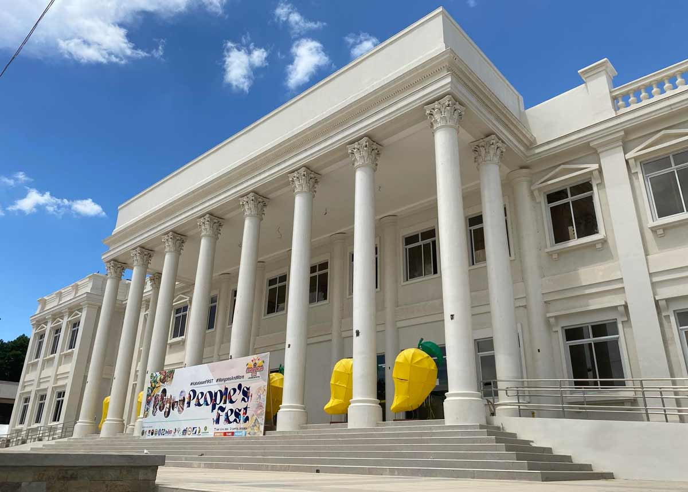

Modern Times
American period, WWII occupation, and Guimaras becoming a full province in 1992.
American Period

During American rule, Guimaras experienced significant progress. In 1908, the people were allowed to elect their municipal president. One notable figure was Douglas MacArthur, who came to Iloilo as a young engineer. He supervised the construction of roads and the Santo Rosario Wharf (now MacArthur's Wharf), which are still in use today. In 1903, he also survived an ambush while working in Guimaras.
Japanese Occupation (World War II)
In 1942, Japanese forces occupied Guimaras during World War II. The island became strategically important as part of Japan's control in the region. In 1945, combined United States and Philippine forces landed on Guimaras and nearby islands. They defeated the Japanese in the Battle of Guimaras, leading to the liberation of the island.
Postwar to Present

After the war, Guimaras continued to develop. On June 18, 1966, it became a sub-province of Iloilo through Republic Act 4667.
During the 1970s, under the leadership of President Ferdinand Marcos, the Philippines entered a period of political and economic crisis. Martial Law was declared in 1972, leading to widespread human rights abuses. Several natives of Guimaras actively resisted the dictatorship and were later honored as heroes.
Despite these challenges, Guimaras progressed politically. On May 22, 1992, it officially became a full-fledged province after a successful plebiscite.
In 1995, two additional municipalities — Sibunag and San Lorenzo — were created, completing the five municipalities of the province today.